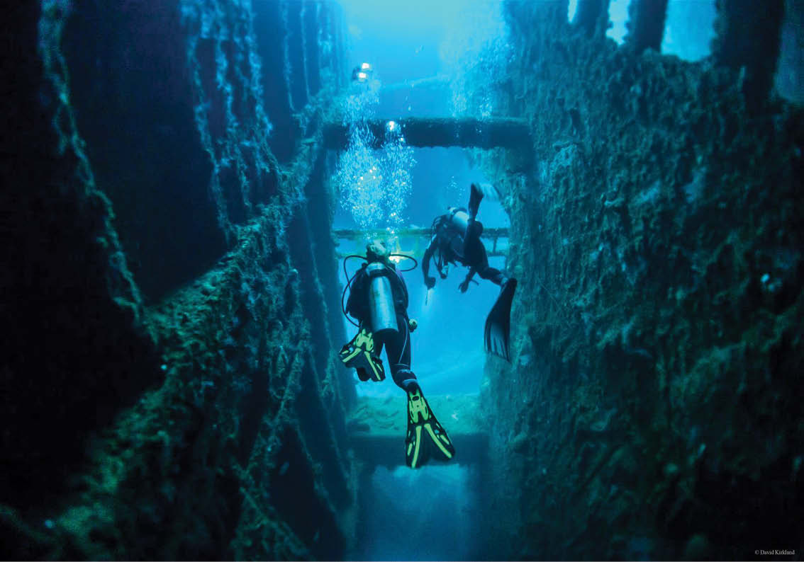
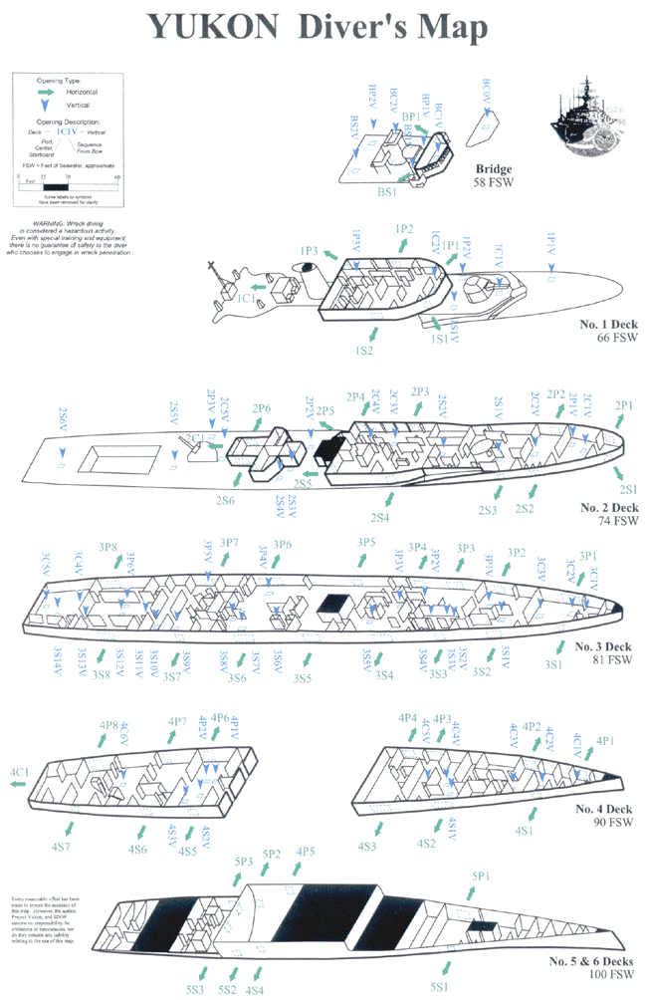

Location: San Diego,California Basic Information: The HMCS Yukon was a Candaian destroyer escort, 366 feet
long
and
40 feet wide, with 6 decks and
over 100 compartments. It is Part of San Diego’s Wreck Alley — a series of six artificial reefs — this
Mackenzie-class destroyer purpose-sunk on July 14th, 2000 now lies on its port side at a depth of 100
feet.
Aside
from a slightly tricky orientation, the 366-foot-long wreck is ideal for penetration thanks to numerous
entry
and
exit points cut into the steel hull.
Inside the Yukon is a maze of tunnels and passageways. Many access holes are cut into hall, so the diver
will
never
be more than 30 feet away from an exist.

It has been estimated that in order to explore the whole Yukon, it will take about 30 dives. Divers will
explore at approximately
80
feet,
and it is also dark down there because not all access holes to the ship face to the sun. No.5 and No.6 dive
decks
are particularly dark.
 Visibility: 15-40 feet best Season: All-year round Difficulty: Advance(should be attempted by divers who are technically trained
and equipped)